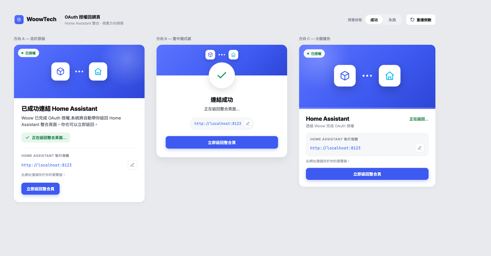
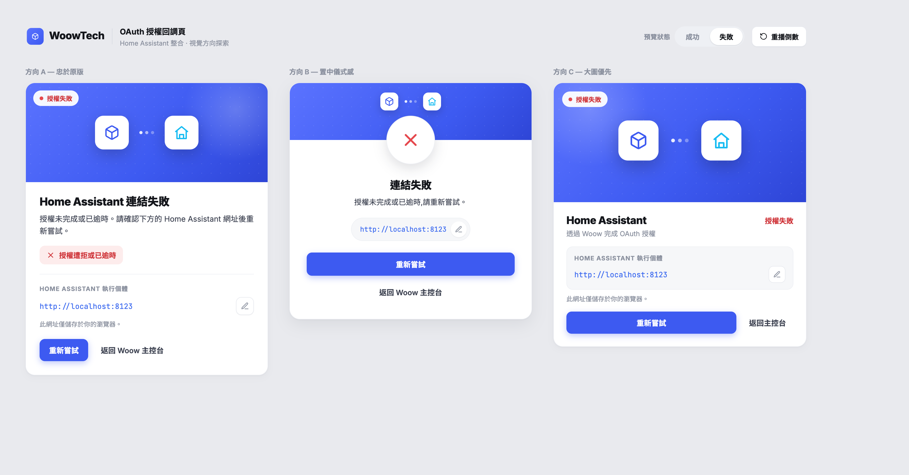

目標與背景 TL;DR
核心：零第三方頁；接 token 100% 重用 HA Core；新寫的只有 view 殼 + 品牌頁 + redirect_uri override。
- 把 callback 跳轉頁從 HA 共用公開頁
my.home-assistant.io/redirect/oauth換成 WOOW 自家、component 渲染、落在本機 HA 的品牌頁，達到「零第三方頁」。 - 同意頁（
/oauth2/authorize）已是 WOOW 自家樣式，不在本題範圍。 - OAuth provider 就是 WOOW 自己，
redirect_uri接受什麼值由 WOOW 的 code 決定，不被 my.home-assistant.io 綁死。 - 可行性研究見 maestri 筆記
research-custom-callback-page（2026-06-17，judge-panel 結論：可行、但 絕不 fork HA Core）。本設計採其推薦的 路線一。 - 新寫的只有：view 殼 + 方向 A 品牌頁 +
redirect_urioverride；_decode_jwt/async_configure等接 token 邏輯 全部重用 HA Core。
現況流程（已與 HA Core 原始碼交叉驗證）
同意頁按「允許」後，state（本機 HA 密鑰簽章的 JWT）經 my-relay bounce 回本機 callback；token 全程不離本機。
▲ 現況：redirect_uri 走 HA Core async_get_redirect_uri()，因預載 "my" component 回寫死 MY_AUTH_CALLBACK_PATH
1redirect_uri 來源
WoowPaasOAuth2（oauth2.py）繼承 LocalOAuth2ImplementationWithPkce，redirect_uri 走 HA Core async_get_redirect_uri()；因 HA 預設載入 my component，回傳寫死的 MY_AUTH_CALLBACK_PATH（homeassistant/helpers/config_entry_oauth2_flow.py:67-68）。
2同意頁「允許」→ 302 到 my-relay
WOOW 同意頁按「允許」→ 302 帶 code+state 到 my-relay；state 是用 本機 HA 密鑰簽章的 JWT（{flow_id, redirect_uri}，_encode_jwt），relay 看不懂、只負責 bounce 回本機 /auth/external/callback。
3本機 callback view 接手
本機 OAuth2AuthorizeCallbackView（config_entry_oauth2_flow.py:603-644）用 _decode_jwt 解出 flow_id → async_configure 餵回 config flow → component 後端用 PKCE 換 token。token 全程不離本機。
目標流程（路線一）· 6 步
關鍵差異：redirect_uri override 成 {HA-Frontend-Base}/auth/external/woow/callback，不走 my-relay；callback 落在我們自寫的 view，render WOOW 品牌頁。
▲ 黃 = 唯一新寫的「畫面」 · 藍 = redirect_uri override · 綠 = 重用 HA Core 接 token
callback view 的成功 / 失敗分支（§4.3 + §9）
▲ 成功 / 失敗的伺服器渲染分支（單元測試只驗變體與文案/狀態碼，§7）
Component 側設計（本 repo）
各單元職責清楚、可獨立理解與測試（小而專注）。預設收合，點開看細節與程式碼。
3.1const.py — 新增跨 repo 契約常數
WOOW_AUTH_CALLBACK_PATH = "/auth/external/woow/callback"3.2oauth2.py — WoowPaasOAuth2 override redirect_uri
略過 HA Core 的 "my" 判斷，回傳本機 woow callback；鏡像 async_get_redirect_uri 的 non-my 分支（3 行）。http = homeassistant.helpers.http；HEADER_FRONTEND_BASE 由 config_entry_oauth2_flow 匯入。
@property
def redirect_uri(self) -> str:
"""Return the WOOW-hosted callback on the local HA instance.
Bypasses HA Core's my.home-assistant.io relay so the OAuth callback
lands directly on a component-rendered, WOOW-branded page.
"""
if (req := http.current_request.get()) is None:
raise RuntimeError("No current request in context")
if (ha_host := req.headers.get(HEADER_FRONTEND_BASE)) is None:
raise RuntimeError("No header in request")
return f"{ha_host}{WOOW_AUTH_CALLBACK_PATH}"3.3oauth_callback_view.py（新檔）— WoowOAuth2CallbackView
HomeAssistantView 子類，get() 鏡像 OAuth2AuthorizeCallbackView.get，但 render WOOW 品牌頁。重用 _decode_jwt + async_configure，差別只在 render。
class WoowOAuth2CallbackView(HomeAssistantView):
requires_auth = False
url = WOOW_AUTH_CALLBACK_PATH
name = "woow_paas_smart_home:oauth_callback"
async def get(self, request):
# 1. 缺 state → 品牌錯誤頁
# 2. _decode_jwt(state) is None → 400 品牌錯誤頁（不呼叫 flow）
# 3. 有 code → user_input={state, code}；有 error → {state, error}；皆無 → 錯誤頁
# 4. await async_configure(flow_id=state["flow_id"], user_input=...)
# 5. render 方向 A 變體（成功/失敗）：自包含 HTML + inline vanilla JS controller提供 idempotent 註冊輔助：
def async_register_woow_callback_view(hass) -> None:
if hass.data.get(DATA_CALLBACK_VIEW_REGISTERED):
return
hass.http.register_view(WoowOAuth2CallbackView())
hass.data[DATA_CALLBACK_VIEW_REGISTERED] = True3.4註冊時機（關鍵）— 兩處皆 idempotent
首次 UI 設定時 async_setup 不會被呼叫（既有 config_flow.async_step_user 即為此 lazy 註冊 impl）。callback view 必須在授權 302 回來前就存在，故：
config_flow.async_step_user：在 lazy 註冊 impl 旁，加async_register_woow_callback_view(hass)（涵蓋首次設定 + reauth，因 reauth 也走async_step_user）。__init__.py async_setup：亦呼叫一次（HA 重啟、既有 entry 已存在時就緒）。- 兩處皆 idempotent（
hass.dataflag）。
3.5HA Core 私有 helper 依賴（_decode_jwt）
_decode_jwt 為 HA Core 底線私有 helper（研究筆記點名的依賴風險）。以 CI 冒煙測試鎖住（見 §測試），HA 升版若改動 _encode_jwt / _decode_jwt 行為會 fail loudly。
品牌頁內容 — 方向 A「忠於原版」
伺服器渲染的 自包含 HTML（inline style 照搬 mockup 的設計 token，不載 React、不依賴外部 CSS/字型 CDN）。狀態由伺服器決定後渲染對應變體，再以 vanilla JS 接行為。視覺參考截圖如下。

▲ 成功變體：「已成功連結 Home Assistant」（assets/callback-design-success.png）

▲ 失敗變體：「Home Assistant 連結失敗」（assets/callback-design-error.png）
兩種狀態文案（逐字）
| 區塊 | 成功 | 失敗 |
|---|---|---|
| Badge | 已授權 綠 | 授權失敗 紅 |
| 標題 | 已成功連結 Home Assistant | Home Assistant 連結失敗 |
| 內文 | Woow 已完成 OAuth 授權，系統將自動帶你返回 Home Assistant 整合頁面。你也可以立即返回。 | 授權未完成或已逾時。請確認下方的 Home Assistant 網址後重新嘗試。 |
| 狀態 pill | ✓ 正在返回整合頁面…（綠） | ✕ 授權遭拒或已逾時（紅） |
| 主按鈕 | 立即返回整合頁 | 重新嘗試 |
| 次按鈕 | （無） | 關閉視窗（原 mockup「返回 Woow 主控台」，依決策改） |
設計 token
#FFF、border #E8EAEF、radius 18px、shadow 0 1px 2px / 0 4px 14px、width 460px188px、漸層 135deg #5B73FF→#3D5AF1→#2E45D6、點陣 size 18px opacity .55、右上光暈 200×200#157F43/dot #1FA055；失敗 text #CF3439/dot #E5484D；底 rgba(255,255,255,.94) pill16、#FFF、shadow 0 10px 28px；中間三顆 6×6 白點跑 pulseDot（1.4s，delay 0/.2/.4）21px/800 #14161B letter-spacing -.02em；內文 14.5px/1.6 #3C4150#E7F6EC/text #157F43；失敗 bg #FDECEC/text #CF343911.5px/700 ls .07em #8A909E、上分隔線 #EEF0F4；URL mono #3B69EF 14px；編輯鈕 34×34 radius 10；helper 12px「此網址僅儲存於你的瀏覽器。」#3D5AF1 white 14px/700 radius 10 padding 11px 18px；次（失敗）：transparent #3C4150 14px/600SVG icon（stroke icon，viewBox 0 0 24 24）
| Icon | path |
|---|---|
| Cube（Woow） stroke #3D5AF1 w2 | M21 8a2 2 0 0 0-1-1.73l-7-4a2 2 0 0 0-2 0l-7 4A2 2 0 0 0 3 8v8a2 2 0 0 0 1 1.73l7 4a2 2 0 0 0 2 0l7-4A2 2 0 0 0 21 16Z ＋ m3.3 7 8.7 5 8.7-5 ＋ M12 22V12 |
| Home（HA） stroke #18BCF2 w2 | M3 10.5 12 3l9 7.5 ＋ M5 9.5V21h14V9.5 ＋ M9 21v-6h6v6 |
| Check（成功 pill） currentColor w2.4 | M20 6 9 17l-5-5 |
| X（失敗 pill） currentColor w2.2 | M18 6 6 18 ＋ M6 6l12 12 |
| Pencil（編輯） currentColor w2 | M12 20h9 ＋ M16.5 3.5a2.12 2.12 0 0 1 3 3L7 19l-4 1 1-4Z |
| keyframe | @keyframes pulseDot{0%,100%{opacity:.3}50%{opacity:1}} |
行為（vanilla JS controller，三決策）
①HA 執行個體 URL 欄（完全忠於原版）
可編輯、localStorage['woow_ha_url']，預設值 window.location.origin；編輯鈕 → 輸入 → 存 localStorage；helper「此網址僅儲存於你的瀏覽器。」此 URL 同時是下方倒數/立即返回的目標。
②成功返回（window.close() 優先 + fallback 倒數導回）
載入即試 window.close()（popup 情境 → 回 dialog 自動前進，同 HA 原生）。若約 1s 後仍開著（同分頁/被擋），顯示卡片與 5s 倒數「正在返回整合頁面…」，倒數結束 location.href = {haUrl}/config/integrations/dashboard；「立即返回整合頁」＝立即 window.close() → fallback 同導回。
③失敗按鈕
「重新嘗試」＝window.close() → fallback 導回 integrations；次鈕「關閉視窗」＝window.close()。頁面為獨立 HTML（不走 strings.json）。倒數預設 5s（同 mockup）。
實作細節：pulseDot keyframe inline；JetBrains Mono 退化到 ui-monospace, monospace。清掉 mockup 的 React/styled-component 殘留（data-dc-tpl、scp*、sc-interp），改用語意化 markup。設計來源：Eugene 提供的視覺方向探索（standalone HTML，含方向 A/B/C），定案 方向 A — 忠於原版。
paas 側契約（跨 repo · 由 maestri 驅動 paas-platform agent）
已與 paas-platform agent 對齊（2026-06-18）。對方確認可行，開發量 model+seed+healer+tests ≈ 0.5–1 天 + review。
| # | 決策 | 定案 |
|---|---|---|
| 1 | path 常數 | /auth/external/woow/callback（跨 repo 契約常數，兩端對齊） |
| 2 | scheme 尺度 | 公網 host 強制 https；http 僅限 loopback / 私有網段 / .local（RFC 8252 風格）。host 不限，只是 scheme 按 host 類別分 |
| 3 | query/fragment | reject（callback view URL 乾淨無 query） |
| 4 | 舊值去留 | 移除 my.home-assistant.io，只接受新 pattern（不走 superset） |
| 5 | flag 形態 | 由 paas 拍板；我方傾向 Selection redirect_uri_match_mode，尊重其 require_pkce Boolean 先例 |
paas 端變更（研究筆記點名 + agent 補充）
src/models/oauth_client.py:144-147check_redirect_uri：對 client_idwoow-ha-smart-home由精確比對放寬成安全 pattern（path 鎖/auth/external/woow/callback、scheme 依 §5#2、reject query/fragment）。其他 client_id 維持 exact-match。- token endpoint（
src/controllers/oauth2.py）的 redirect_uri 驗證套用同一放寬。 src/data/oauth_clients.xml:15：woow-ha-smart-home的 redirect_uri seed 改為新 pattern 表示（移除 my.home-assistant.io）。- healer/migration：
oauth_clients.xml為noupdate=1，既有 stg/prod DB 需 healer（比照oauth_scope_updates.xml）。manifest 走 healer 不需 bump（現 18.0.1.0.40）。 docs/reference/api/ha-component-integration.md（約 :50）「redirect_uri 精確比對」字樣同步更新成放寬契約。
跨 repo 契約常數
lock-step · 逐字一致兩端逐字一致，改值屬 breaking。
- client_id
woow-ha-smart-home（雙方都別動） - pathpaas 側
OAuthClient.HA_CALLBACK_PATH、component 側const.py:WOOW_AUTH_CALLBACK_PATH，值必須逐字一致
發版次序（a→d）
與 paas 確認- 兩邊 spec 定稿（paas 已 ready）
- paas 開 PR 實作 → merge develop
- paas
deploy-stg起帶放寬的 stg - component 指向該 stg 接 E2E
發版前待結問題（不擋 spec 定稿，發版前再結）
1 · prod 是否已有真實 HA 使用者綁 my.home-assistant.io？
決定 prod 發版窗口。補充：refresh_token 不帶 redirect_uri，既有 token 續期不受影響；只有「重新授權」會受 #4 移除舊值影響，影響面有限。
2 · 是否有使用者在私有網段用「自訂網域（非 .local）」？
現規則「公網 host 一律 https」會要求這類使用者用 https；若此情境存在，引導其改用 IP 或 .local。
安全設計（open-redirect 收斂）
放寬 host 的安全基礎是 PKCE 兜底；其餘以 path/scheme 白名單 + 簽章 state JWT 收斂攻擊面。
PKCE 兜底
被竊 code 無 code_verifier（僅合法 component 持有）→ 無法換 token。這是放寬 host 的安全基礎。
path + scheme 白名單
open-redirect 面收斂到單一 path；公網強制 https。
簽章 state JWT（本機 HA 密鑰）
_decode_jwt 對竄改/他機 state 回 None → render 錯誤頁、不呼叫 async_configure。等同重用 HA Core 的 CSRF/state 防護。
放寬僅限 woow-ha-smart-home
其他 client 不受影響。
測試策略（TDD）
目的：未來測試保護、規格定義、連續整合、AI 自動測試。執行環境：HA devcontainer（ha-venv）內跑 hassfest/pytest，非 host；不安裝 PHCC。先寫測試（紅）→ 實作（綠）→ 重構，遵循 test-driven-development。
tests/test_oauth2.py
redirect_uri帶HA-Frontend-Baseheader → 回{base}/auth/external/woow/callback。- 無 header / 無 current_request → raise。
- 即使
"my"在hass.config.components也不回 my-relay。
tests/test_oauth_callback_view.py
- success：valid state →
async_configure被以{state, code}呼叫 → 200 HTML 含方向 A 成功文案（「已成功連結 Home Assistant」）+window.close。 - 無效/竄改 state → 400，HTML 含方向 A 失敗文案（「Home Assistant 連結失敗」），
async_configure未被呼叫。 - 缺 state、缺 code&error → 400 失敗頁。
- error 參數（拒絕）→
async_configure被以{state, error}呼叫 → 200 失敗頁。 - view 註冊 idempotent（呼叫兩次不重複註冊/不報錯）。
- 註：倒數/
window.close/URL 編輯+localStorage 等 client-side JS 行為以 E2E（§E2E）驗證，非 pytest 單元範圍；單元只驗伺服器渲染的變體與文案/狀態碼。
tests/test_init.py（或擴充既有）
async_step_user/async_setup後 callback view 已註冊。
CI 冒煙測試
- assert
_encode_jwt/_decode_jwtround-trip 正常 → 鎖 HA 版本漂移。
E2E 驗證（需 paas 先發 stg）
前提：paas-platform 將放寬發版到 stg（deploy 次序 a→d）。HA 登入 eugene/12341234；以 chrome-devtools / playwright-cli 自動化。
▲ E2E 五步：新增整合 → 授權 → 驗 callback 成功卡 → entry 建立 → 模擬失敗
邊界與風險
各邊界情境與對應行為。多數錯誤路徑都收斂成「品牌錯誤頁、不呼叫 flow」。
| 情境 | 行為 |
|---|---|
| 使用者拒絕授權 | error 參數 → async_configure({error}) → flow abort user_rejected_authorize；品牌取消頁 |
| 無效/竄改 state | _decode_jwt None → 400 品牌錯誤頁，不呼叫 flow |
| 缺 state / 缺 code&error | 品牌錯誤頁 |
無 HA-Frontend-Base（非 UI 流程） | redirect_uri raise（同 HA Core non-my 分支）；UI 流程必有此 header |
window.close() 被擋（同分頁） | 顯示方向 A 卡片 + 5s 倒數後導回 {haUrl}/config/integrations/dashboard（見 §4.5） |
| 瀏覽器連不到本機 HA（遠端 onboarding） | 與 my-relay 同限制，文件註明 |
HA Core 升版改 _decode_jwt | CI 冒煙測試 fail loudly |
| 跨 repo lock-step（#4 移除舊值） | prod 需同步發版；stg 兩端皆我方掌控 |
不做（YAGNI）
刻意排除的範圍，避免過度工程。
- ✕ 不 fork / 不複製 HA Core OAuth helper只重用
_decode_jwt/async_configure。 - ✕ 不自架 WOOW relay 頁（路線二）採路線一，由 component 自家 view 渲染品牌頁。
- ✕ 不為遠端 onboarding 另做 my-relay fallback維持與 my-relay 相同的本機可達限制。
- ✕ component 不主動偵測可達性不條件式切換
redirect_uri。